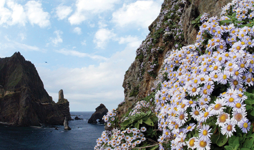
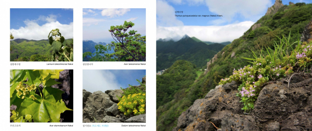

독도는 동해상에 위치한 대한민국의 섬으로, 약 1.5km²의 면적을 가지고 있습니다. 울릉도에서 동남쪽으로 약 87.4km 떨어져 있으며, 두 개의 주요 섬과 주변의 수많은 작은 바위섬들로 이루어져 있습니다. 독도는 해발 168.5m의 동도를 포함하여 30개 이상의 작은 섬들로 이루어져 있습니다.
독도는 다양한 해양 생물과 식물들이 서식하는 독특한 생태계를 가지고 있습니다. 독도 주변 해역은 어류와 해조류의 서식지로서 중요한 역할을 하며, 바다새들의 번식지로도 알려져 있습니다. 특히, 괭이갈매기와 바다제비는 독도에서 흔히 볼 수 있는 새들입니다. 독도는 또한 수많은 해양 포유류의 서식지이기도 합니다.
독도는 천연기념물 제336호로 지정되어 있으며, 환경 보호를 위해 엄격한 규제를 받고 있습니다. 독도의 자연을 보호하고 보존하기 위해 다양한 노력이 이루어지고 있습니다.
